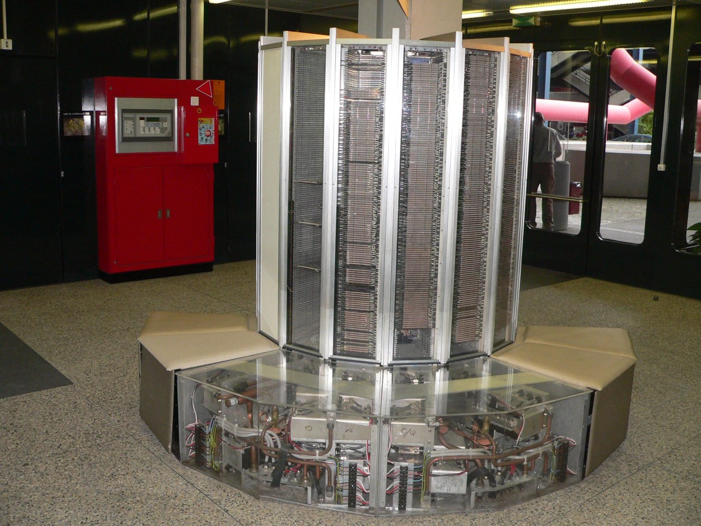

·QUINTA GENERACIÓN: desde 1980 hasta...??
Seymour Cray inventó los superordenadores al unir varios ACs y así
multiplicar la capacidad de cálculo. Los llamó CRAY.
-La programación de estos ordenadores se realizaba mediante hardware,
interconectando con cables los distintos elementos del ordenador, como
las antiguas centralitas telefonicas.
-En 1983 en Japón, utilizando CRAY's se intentó crear una Inteligencia
Artificial utilizando el lenguaje humano para interactuar con ella y
programarlo.
En 1995 se dejó el proyecto por falta de resultados.
